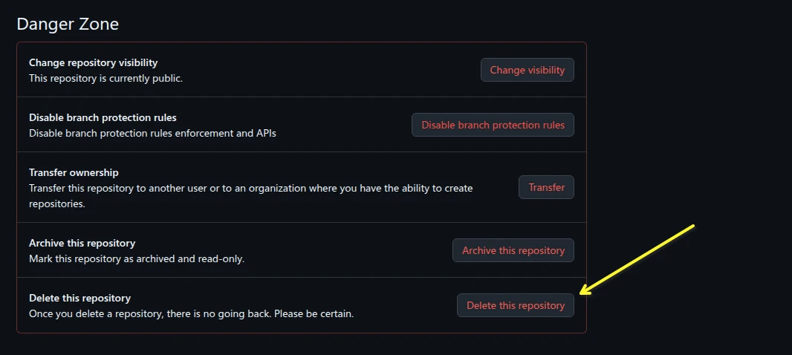
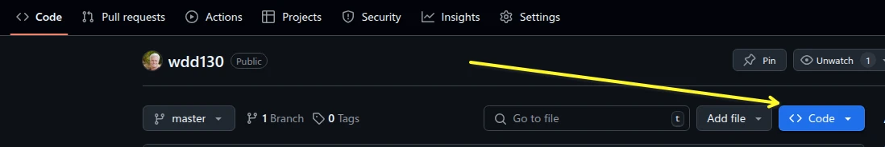
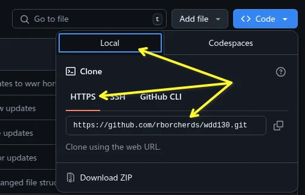

GitHub Features
GitHub is a powerful platform for version control and collaboration. Here are some of the key features that make it a popular choice among developers:
How to delete a repository and reset VSCode
To delete a repository you must go to the settings tab inside the repository on GitHub.
Once there, scroll to the very bottom of the page, you will see a section called "Danger Zone".
Click on the "Delete this repository" button.
Once you have clicked on the button, you will be asked to confirm that you want to delete the repository.
To confirm that you want to delete the repository, you must type the name of the repository in the text box.
Once you have typed the name of the repository, click on the "I understand the consequences, delete this repository" button.
You will be asked to enter your GitHub password as the items in the Danger Zone are administration activities and you must authenticate to use them.
Note that deleting a repository will delete all the issues, pull requests, and wiki pages associated with the repository.
Also note that deleting a repository will not delete the local repository on your computer, so you will need to delete the local repository manually.
To delete the local repository, you will need to remove the folder that contains the repository on your computer.
These steps unlinks your local folder with GitHub
Open the root folder of the repository in VSCode.
Open a terminal in VSCode. On Windows you use Ctrl+` and on a MAC you use ⌃` or you can use the menu option VIEW - Terminal.
Once the terminal is open, type the following command:
On Windows:
Remove-Item c:\Tmp\* -Recurse -ForceOn a Mac and Linux:
rm .git -rfThese commands removes the tracking folder that GIT uses when syncing with GitHub. This hidden folder contains all the configuration information and tracking the changes to know what to sync with GitHub.
How to rename a repository
To rename a repository you must go to the settings tab inside the repository on GitHub.
Once there, you will see a section called "Repository name".

Click on the name of the repository and change it to the new name.
Once you have changed the name, click on the "Rename" button to save the changes.
Note that renaming a repository will change the URL of the repository, so you will need to update any links to the repository.
Also note that renaming a repository will not change the name of the local repository on your computer, so you will need to update the remote URL in your local repository.
To update the remote URL in your local repository, you can use the following command:
git remote set-url origin new-urlWhere new-url is the new URL of the repository.
You can find the new URL by going to the Code tab and then click on the <> Code button
Once you have clicked on the button, you will see a tab called Local, make sure it is selected. Then make sure HTTPS is selected and the URL will be shown.
Click on the "Copy" button to copy the URL to your clipboard. The copy button is the icon to the right of the URL. You can then just paste the URL into the terminal where you are typing your command.
For example, if you renamed your repository from wdd130 to
wdd130-old, the
new URL would be https://githubusername.github.io/wdd130-old.
This is the full command you would type remember to use your GitHub Username
git remote set-url origin https://githubusername.github.io/wdd130-oldTo check the remote URL of your local repository, you can use the following command:
git remote -vHow to change a repository visibility
To change a repository visibility you must go to the settings tab inside the repository on GitHub.
Once there, you will see a section called "Danger Zone".
Click on the "Change repository visibility" button.
Once you click on the button, you will see the option attached to the button to change to the opposite of what the current visibility is. If it is private, you will see "Change to Public".
You will then be prompted to verify you want to make the change and you may have to enter your password to verify you identity and make the change. GitHub will only ask for your password about every 2 hours from the last time you entered the password.